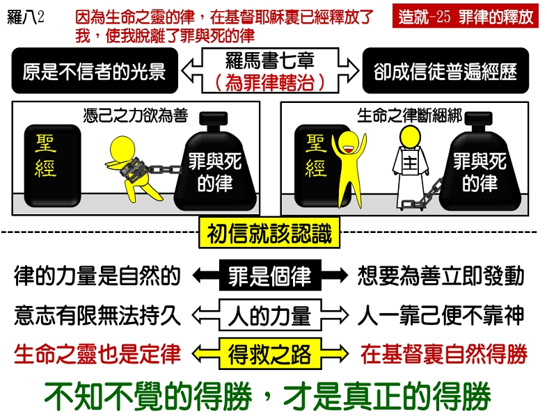

诗歌：244 首、246 首
重要经文：
罗马书七章十七至二十节：其实，不是我行出来的，乃是住在我里面的罪行出来的。我知道住在我里面，就是我肉体之中，并没有善，因为立志为善由得我，只是行出来由不得我。因为我所愿意的善，我反不作；我所不愿意的恶，我倒去作。若我去作所不愿意的，就不是我行出来的，乃是住在我里面的罪行出来的。
罗马书八章一至二节：如此，现今那些在基督耶稣里的，就没有定罪了。因为生命之灵的律，在基督耶稣里已经释放了我，使我脱离了罪与死的律。
纲目要点：
壹 人信主之后立即从罪里得释放：
一 在信了主之后，但常常受罪的打扰。
二 主不是把它打死，主乃是把你挪开，救你脱离了罪的能力。
贰 罪是个律：
一 立志为善由得我，只是行出来由不得我。
二 我所愿意的善，我反不作；我所不愿意的恶，我倒去作。
三 保罗是第一个人讲出罪是一个律，这是一个十分重要的发现。
参 人的意志不能胜过罪的律：
一 保罗认识要用意志来对付罪的律，是办不到的事。
二 人的意志的力量是不能持久的，罪的律却一直在那里活动。
三 意志能得胜一时，但是结果总是被罪的律所胜。
肆 得胜的方法：
一 如今那些在基督耶稣里的，就不定罪了。
二 赐生命之灵的律，在基督耶稣里释放我，使我脱离罪和死的律。
三 愿我们的眼睛得开，能看见这一条释放的路与得胜的秘诀。
信息选读：
信主后立即从罪里得释放
许多人信了主之后，不但没有从罪里得释放，反而常常陷在罪恶中。不错，他们是得救的人，是属乎主的人，在他们里面已经有了永生；但是他们常常受罪的打扰，使他们不能按着他们所愿意的在那里事奉主。一个人信主之后仍受罪的打扰，的确是一件十分痛苦的事。因为蒙了神光照的人，他的良心是敏锐的，他有罪的感觉，里面有一个定罪为罪的生命，但是竟然受了罪的打扰，使他觉得难受，甚至于觉得灰心，这的确是一个非常痛苦的经历。
在神的话语里，并没有告诉我们要用力量去与罪挣扎因此，许多基督徒在那里想要胜过罪。有的人以为，只要拒绝罪，就能脱离罪，所以就想用力量拒绝罪的试探。有的人以为，罪是需要胜过的，所以就一直在那里与罪争战，想胜过它。有的人以为，罪叫他不自由，他如果努力的挣扎，就能脱离罪的捆绑，所以他就尽力量在那里挣扎。但是，这些都是人的意见，这些都不是神的话，都不是神的教训。这些方法，都不能带人到得胜的地步。在神的话语里，并没有告诉我们要用我们的力量去与罪挣扎。神的话是告诉我们，要从罪里得拯救，或者说，要从罪里得释放，要从罪里得自由。罪本来是一个能力，它抓住了你；现在并不是你把这能力打消，乃是让主来救你脱离它。你本来和它在一起，没有方法离开它；今天，主不是把它打死，主乃是把你挪开，救你脱离了罪的能力。初信的基督徒一信主就该知道从罪里得释放这件事；不需要转多少弯才从罪里得释放，应该一信主就能走一条自由的路。
罪是一个律
我们先要明白什么叫作律。通俗一点说，律的意思就是一直如此，没有例外；并且，律是有力量的。律的力量是自然的，是不需要人工作出来的。只要是一个律，它就有力量。比方：地心吸力是个律。你把一件东西向上一抛，它就自然会落到地上来。你不必用手拉它下来，地球自然会有一个力量吸它下来。你把一块石头抛上去，石头会落下来；你把一块铁抛上去，铁也会落下来。你在中国把东西抛上去，它会落下来；你在外国把东西抛上去，它也会落下来。你在今天把东西抛上去，它会落下来；你到明天把东西抛上去，它也会落下来。只要没有别的东西把它托住，那就不论在什么地方，不论在什么时候，它总是要落下来的。所以，律的意思就是一直如此，没有例外；并且是一种自然的力量，不需要人力去维持它。罗马七章给我们看见，保罗是在那里想得胜。他想，最好能够不犯罪，能够作讨神喜欢的事。他不愿意犯罪，他不愿意失败。但是结果，他承认他的立志不行，他说：『立志为善由得我，只是行出来由不得我。』他不愿意犯罪，反倒去犯；他愿意为善，愿意行神的律法，反而行不出来。换句话说，自己所愿意的，都不能作；自己所立志的，也都不能作。保罗是第一个人讲出罪是一个律。这是一个十分重要的发现！
人的意志不能胜过罪的律
你用手托着一本一斤重的书，地心吸力要把它吸下去，你尽力量把它托住。但是有一个律一直在那里作工，要拖它到地上去。你一直用一只手托住它，不让它落下去。结果，一个钟头你得胜了，两个钟头你觉得有点累了，再过一个钟头，你的手不听你的话了，到后来，你不能不松手了。因为地心吸力是不累的，但是你的手却累了。有一个地心吸力的律在那里拖它，每一个钟头在那里拖它，每一分钟在那里拖它，每一秒钟在那里拖它。你这一只手无论如何不能持久的与地心吸力对抗，你越托越觉得重。不是这本书变得重了，乃是地心吸力胜过了你手的力量，使你越过越觉得重。要想用意志来胜过罪也是这样。意志能与罪抵抗一些时候，但是罪的力量远超过人意志的力量。罪是一个律，它不会因着意志反抗一下就消灭。
生命之灵的律使人脱离罪的律
罪是一个律，意志不能胜过罪的律，那么，得胜的方法在那里呢？罗马八章一至二节说， 『如此，现今那些在基督耶稣里的，就没有定罪了。因为生命之灵的律，在基督耶稣里已经释放了我，使我脱离了罪与死的律。』这是得胜的方法。许多基督徒只看见生命之灵释放了他，使他脱离罪和死，没有看见生命之灵的律释放了他，使他脱离罪和死的律。许多基督徒，不知道要花多少年的工夫才知道罪和死是一个律，也不知道要花多少年的工夫才知道圣灵在我们身上也是一个律。直等到有一天，主开我们的眼睛的时候，我们才看见罪是一个律；也要到有一天，主开我们眼睛的时候，我们才看见圣灵也是一个律。看见圣灵也是一个律，这是一个更大的发现。当我们知道赐生命的圣灵是一个律的时候，我们就会跳起来说：『感谢主，阿利路亚！』
我们应该有的正确态度
这一个律拯救我们脱离那一个律的时候，我们一点不花力气，我们不必立志，不必花工夫，不必抓住圣灵。主的灵在我们里面，我们就不需要那样忙。你如果怕主的灵在你身上不管事，所以试探一来，你就自己赶快去帮忙，那你还没有看见圣灵在你里面是一个律。所以，胜过罪是一点不花力气的。罪的律使我们犯罪的时候，我们没有花力气；照样，圣灵的律把我们从罪中释放出来的时候，我们也不必花力气。不必花力气的得胜，才是真的得胜。这样，我们就没有事好作了，我们可以仰起头来对主说：『没有事了。』从前的失败是律，今天的得胜也是律。有许多弟兄姊妹的路是冤枉走的，有许多弟兄姊妹的眼泪是因着失败而流的。如果你要少受许多的苦，少流许多的眼泪，就要在一起头的时候看见，拯救和释放的路就是『赐生命之灵的律，在基督耶稣里释放了我。』这一个律，是那样的完全，是那样的有力量，能拯救我们到底，用不着我们去帮助它。这一个律自然而然使我们完全脱离罪，自然而然使我们完全圣洁，自然而然使我们满有生命。但愿神开你的眼睛，使你看清楚这一条释放的路，这一个得胜的秘诀，一起头就走正直的路！
课程复习：
一 请说明人信主后，可以立即从罪里得释放吗？
二 为何在神的话语里，并没有告诉我们要用力量去与罪挣扎?
三 罪是一个律，意志不能胜过罪的律，那得胜的方法在哪里呢？
四 为何人的意志不能胜过罪的律？
五 为何我们靠着这一个律，就自然而然脱离罪和死的律？
